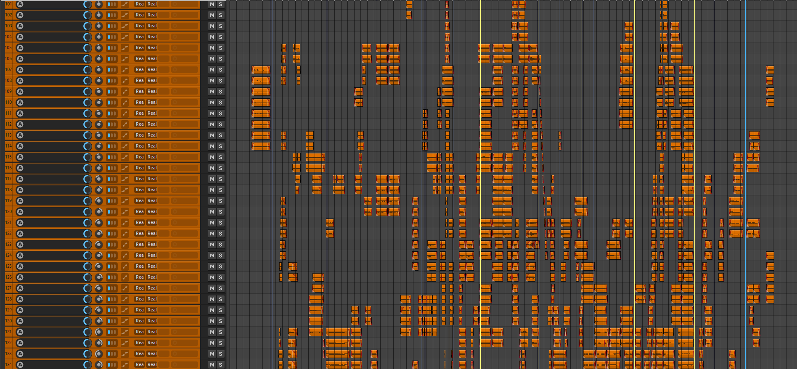
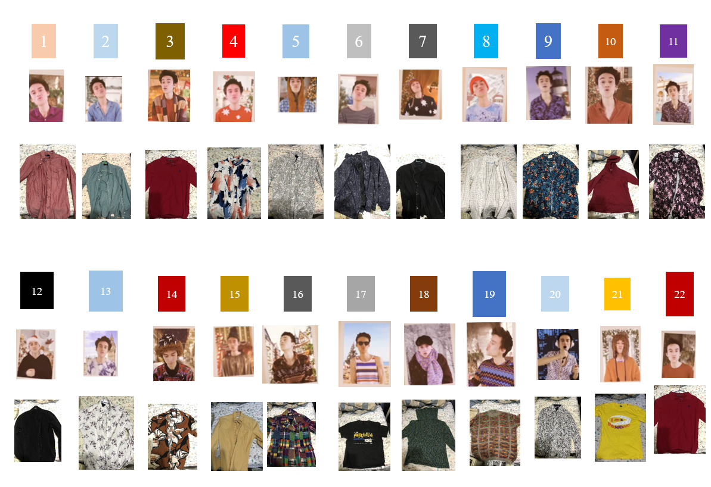

Cover Production
The Christmas Song
Chestnuts Roasting On An Open Fire
Watch
影片
Overview
製作概覽

200+
製作總時數
5:31
影片時長
264
音軌數量
102
演出人物角色數
22
服裝套數
受 Jacob Collier 影響，以多聲部和聲、非傳統調式與複雜節奏為核心，花費超過 203.5 小時，從九月製作至十二月完成這首翻唱。22 套服裝中包含 7 件從紐西蘭採購的花襯衫。
Audio
音訊製作
錄音設置
使用兩支電容麥克風（SSL Connex 與 G55）分別捕捉不同頻率特性的聲音，透過雙麥設置豐富和聲的音色層次。
| DAW | Reaper（Windows 免費版） |
| 錄音器材 | iPhone 8 Plus、SSL Connex、G55 電容麥克風 |
| 總音軌數 | 264 軌 |
| 混音工具 | 音量調整、淡入淡出、EQ 處理、壓縮、低音八度降調 |
錄音技巧
部分段落採降速錄音打造出音色多元性；低音聲部以八度降調壓縮方式處理，以現有器材模擬深沉音色；自行改編簡化版獨奏。
| 部分段落 | 降速錄音，後期調回正常速度 |
| 低音處理 | 八度降調壓縮 |
| 口琴段落 | SUZUKI MELODION M-37，自編簡化版獨奏 |
Video
影像製作
拍攝設置

架設 2m × 3m 綠幕棚，在 22 套服裝之間切換，共完成 102 個不同「Jacob」角色的對嘴演出。
| 綠幕尺寸 | 2m × 3m |
| 服裝數量 | 22 套（含 7 件紐西蘭花襯衫） |
| 角色數量 | 102 個 |
| Album 頁數 | 15 頁（筆記本頁面 + 卡紙手工製作） |
後期製作
手工製作 Album 道具，以 Adobe After Effects 處理多層合成，Premiere Pro 完成最終剪輯。此為首次自學 Ae 及 Pr 剪輯的作品。
| 合成軟體 | Adobe After Effects 2025 |
| 剪輯軟體 | Adobe Premiere Pro 2025 |
| Album 道具 | 筆記本頁面 + 卡紙，手工製作 |